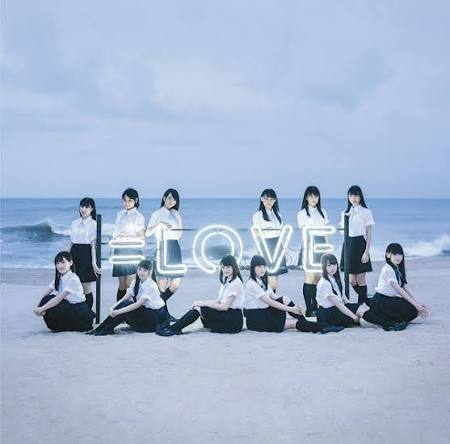

Yuki & 小姐
大家哈囉～！這裡是Yuki_小姐💕
🎀 基本情報 / プロフィール
・名前：Yuki (ユキ)
・誕生日：2月6日
CORE_AUDIO_LOG
等於愛 | イコールラブ
<>>-<»>==<社群連結>==<«>-<<>
DC | 喵喵女僕殿堂 🐾 女僕扮 cosplay 社群
<>>-<»>==<直播平台>==<«>-<<>
YT | Yuki_小姐
<>>-<»>==<社交媒體>==<«>-<<>
FB | Xiaoxue Misa Yuki
IG | haiyi_0206
Facebook
X / Twitter
Line
WhatsApp
複製連結

Null track
=LOVE - =LOVE (イコールラブ)
00:00
00:00